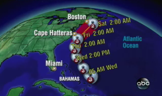
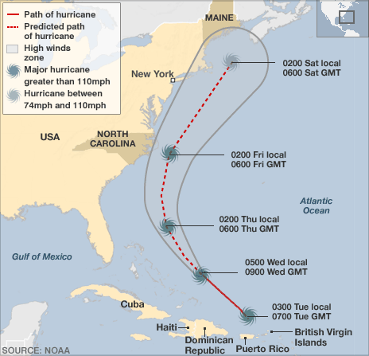

Virginia’s governor declared a state of emergency today and North
Carolina ordered mandatory evacuations for visitors from several
barrier islands as powerful Hurricane Earl bore down on the coastal
states with winds topping 125 mph. Coastal residents from the Carolinas
as far north as Cape Cod are on high...
Read more »
Latest Story
Virginia’s governor declared a state of emergency today and North Carolina ordered mandatory evacuations for visitors from several barrier islands

Actor Shelley Malil best known for being in the movie “The 40-Year-Old Virgin”, is on trial for stabbing more than 20 times his ex-girlfriend Kendra Beebe
Shelley Malil, an actor best known for playing an electronics-store
clerk in The 40-Year-Old Virgin, calmly walked up to his ex-girlfriend
Kendra Beebe in her backyard two years ago, leaned in as if to hug her,
then stabbed her repeatedly, Beebe testified Tuesday in Malil’s trial
for attempted murder....
Read more »
Michael Douglas revealed at “The Late Show With David Letterman” that he is on stage IV of his throat Cancer
Michael Douglas, appearing on “The Late Show With David Letterman”
on Tuesday, shocked the audience when he revealed his throat cancer is
“a Stage IV.” The actor, in town to promote “Wall Street 2,” appeared
upbeat if a bit thin,after just completing a week of radiation and
chemotherapy. He...
Read more »
President Obama will have dinner with Israel’s prime minister Binyamin Netanyahu, and Palestinian president Mahmoud Abbas, to start the end of Israeli-Palestinian conflict
This evening President Obama will sit down for dinner with
Israel’s prime minister, Binyamin Netanyahu, and the Palestinian
president, Mahmoud Abbas, marking the start of direct negotiations
between the pair with the ambitious aim of agreeing a final settlement
to the Israeli-Palestinian conflict within 12 months. King Abdullah of
Jordan...
Read more »
Evacuations have begun in areas of the US east coast likely to be hit by Hurricane Earl

The storm has dropped to Category Three but is still generating
sustained winds of 201km/h (135mph). One island in North Carolina’s
Outer Banks is being evacuated and visitors are being asked to leave
another. The narrow islands are served by a single main road and
officials worry that waves...
Read more »